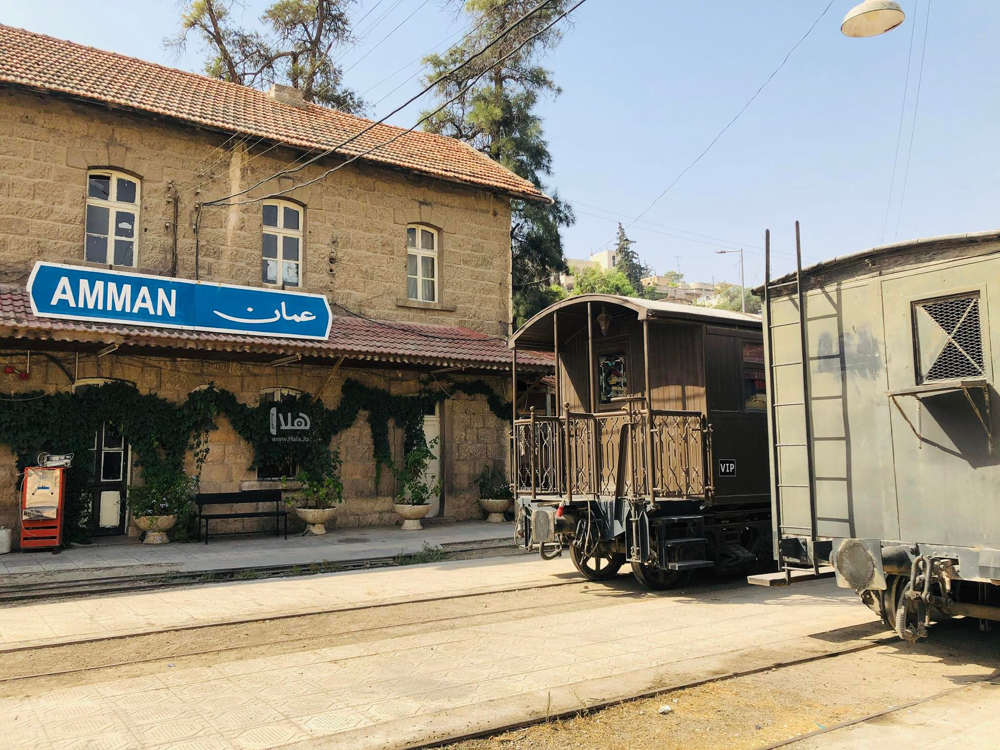
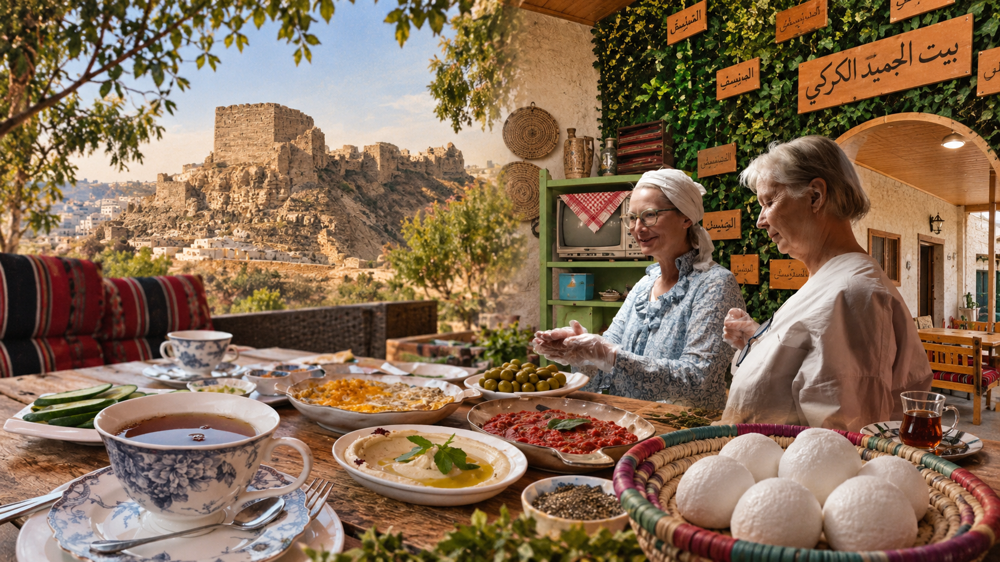
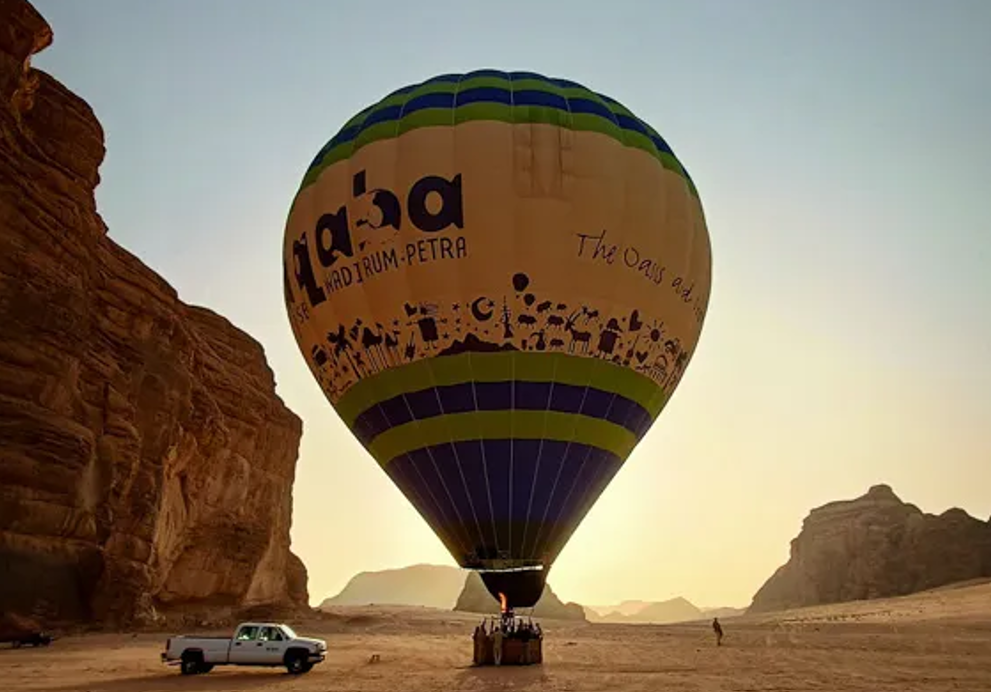
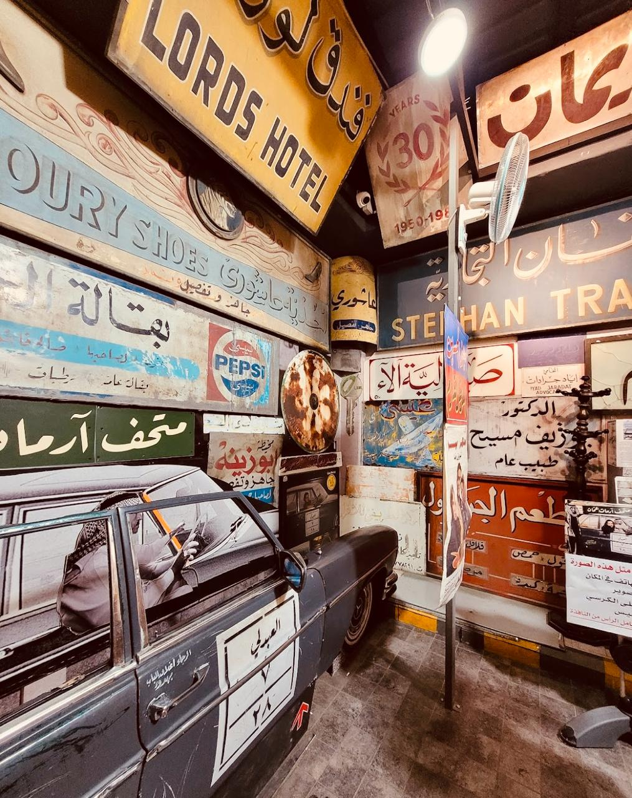
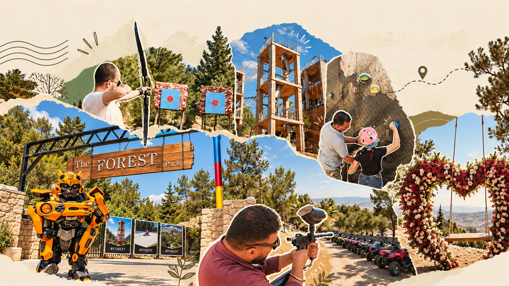
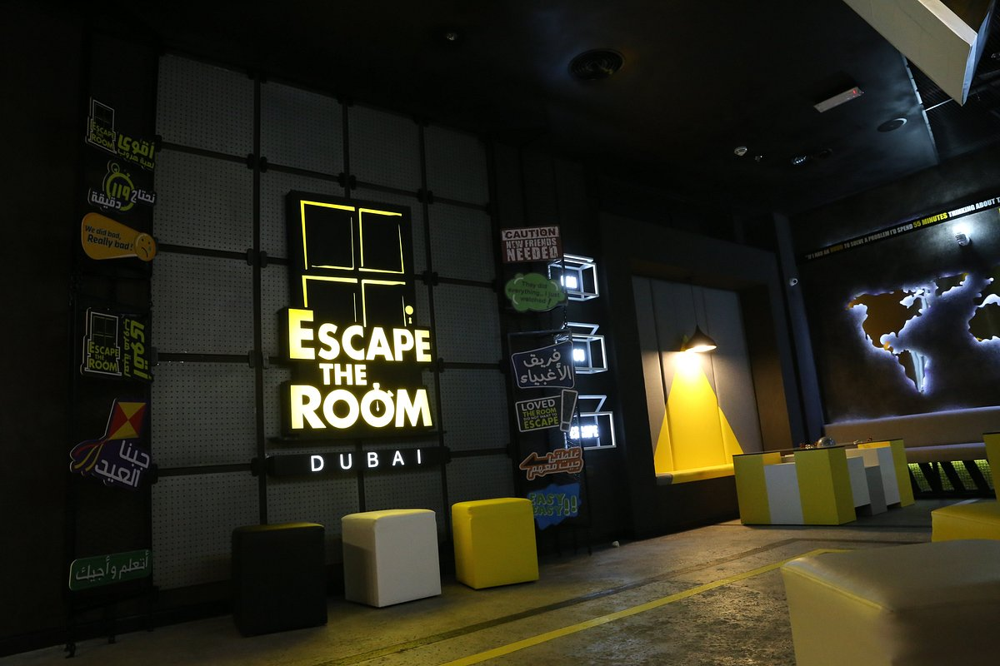
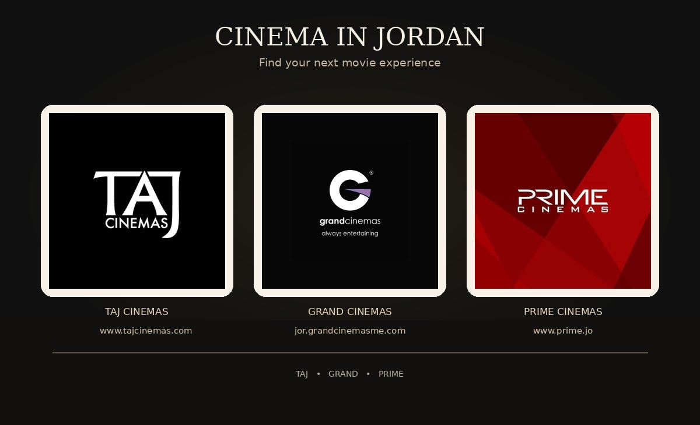
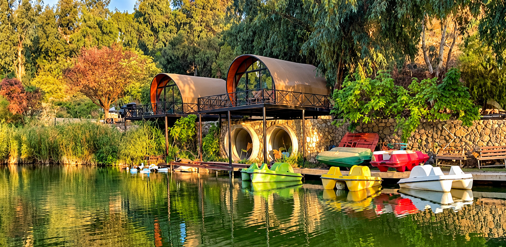
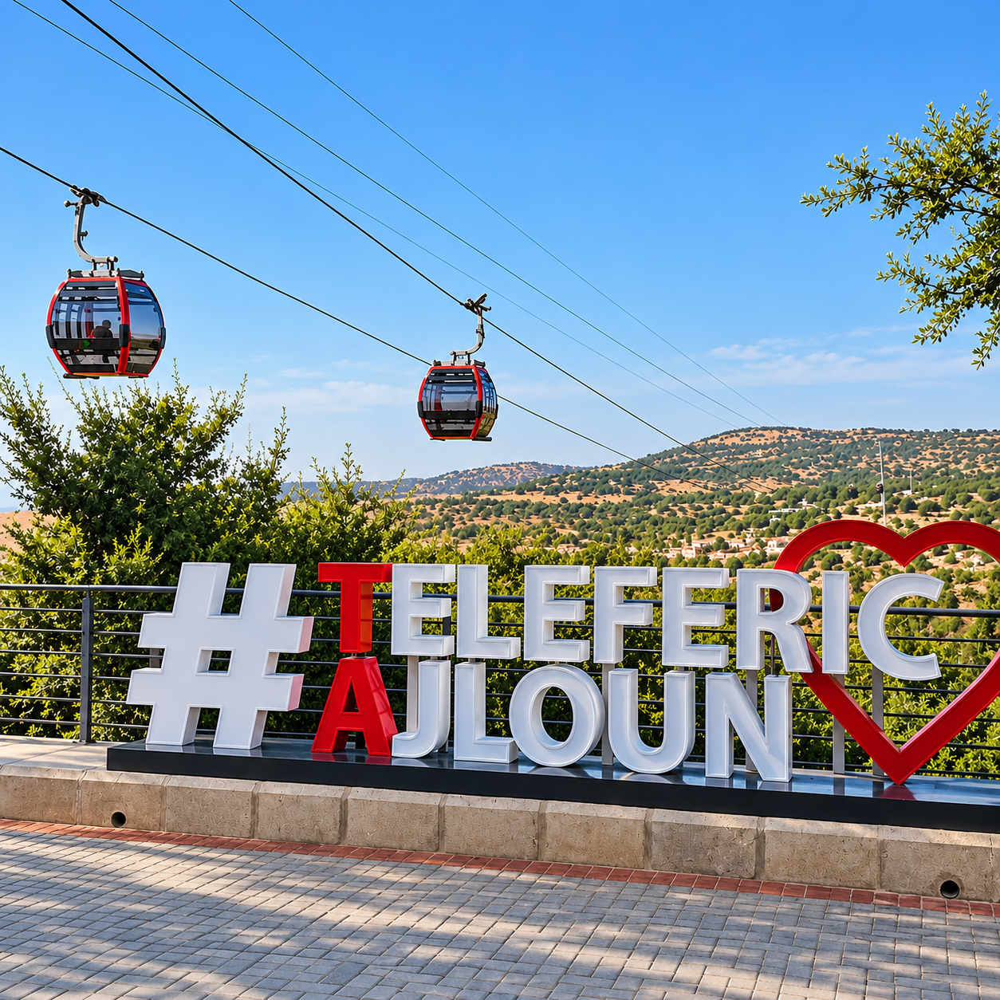
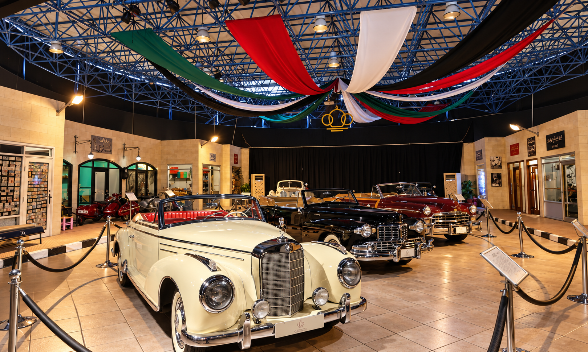

Where to go??

Step into Jordan’s railway history at a historic station on the Hejaz Railway, once a vital link across the region.
Historic Heritage
Explore the station, locomotives, and historic carriages.
Railway Experience
Discover the Hejaz Railway’s story and its role in the region.
Step Into History
See vintage trains and station details, and capture the moment.

A heritage guesthouse in Al-Marj, Karak, offering an authentic taste of local hospitality and cuisine.
Food Experience
Prepare dishes and learn traditional local recipes.
Breakfast & Lunch
Enjoy Karaki meals made with local flavors.
Stay & Experience
Stay in a heritage inn rooted in local culture.

A memorable ride above Wadi Rum, with panoramic views of its mountains and desert landscape.
Aerial Views
See Wadi Rum from a whole new perspective.
Balloon Ride
Enjoy a peaceful flight above the desert.
Wadi Rum, Jordan
Take in the desert scenery from the sky.

A cultural space preserving Amman’s memory through the old signs that once shaped its streets and everyday life.
Old Signs
Discover vintage signs and ads, each with a story from Amman.
A Walk Through Time
See the city’s past through its streets, signs, and atmosphere.
Amman Heritage
Explore a unique side of Amman’s history and local culture.

An outdoor adventure park with activities for adults and children, from climbing and ziplining to archery and family play areas.
Location
Jordan Street, around 10 minutes from Abu Nseir, Amman.
Adventure & Play
Enjoy outdoor challenges and activities for different ages.
Family Day Out
Explore children’s play areas and plan a day together.

Step into a world of mystery, solve clever puzzles, and race against time to escape before it runs out.
Solve the Puzzles
Crack codes, uncover clues, and solve mind-bending challenges.
Unlock the Mystery
Explore hidden secrets and discover the story behind the room.
Beat the Clock
Work together and escape before time runs out.

Discover the latest movies and enjoy the ultimate cinema experience at Jordan’s favorite cinemas. Choose your cinema, explore what’s showing, and plan your next movie night.
TAJ Cinemas ↗
TAJ Mall, Abdoun, Amman.
Grand Cinemas ↗
City Mall, Amman.
Prime Cinemas ↗
Abdali Mall and Baraka Mall in Amman, and Irbid City Center.

Explore thrilling off-road experiences in Jordan, from 4x4 desert rides and dune bashing to rocky trail adventures and scenic sunset drives. Discover exciting outdoor activities and experience Jordan beyond the usual roads.
4x4 Jeep Tours & Dune Bashing
Explore exciting off-road experiences.
Rocky Trail Driving
Discover outdoor trail adventures.
Desert Sunset Rides
Plan scenic rides and guided off-road tours with the operator.

Enjoy a scenic cable car ride above Ajloun’s lush forests and rolling hills, with breathtaking panoramic views and a unique way to explore Jordan’s natural beauty.
Location
Ajloun, Jordan.
Cable Car Ride
≈ 20 minutes.
Highlights
Panoramic views, mountain scenery, and photography.

Discover a remarkable collection of classic and vintage cars that tells the story of Jordan’s history and the Royal Family. A must-visit destination for car enthusiasts and history lovers.
Location
Amman, Jordan.
Experience
Classic cars and royal history.
Highlights
Vintage cars, royal collection, historical exhibits, and photography.